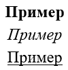
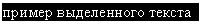
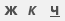
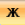
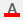
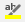
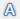

Полужирный, курсив, подчеркнутый
Бывает так, что в напечатанном тексте есть определенная часть или одно понятие, на которое нужно обратить внимание. То есть нужно сделать так, чтобы какая-то часть бросалась в глаза, и читатель смог заострить на ней внимание. Для этих целей используют различное отображение текста.
Ниже представлен пример того, как могут быть написаны буквы и слова.
Для того, чтобы изменить начертание, в программе Microsoft Word есть специальные кнопки.
— Полужирный (в народе его называют «жирный»)
— Курсив (наклонный)
— Подчеркнутый
Как изменить начертание
Сначала нужно выделить слово, которое хотите изменить. Чтобы это сделать, наведите курсор в самое его начало. Затем нажмите левую кнопку мыши и, не отпуская ее, тяните в конец слова. Когда оно закрасится другим цветом (обычно серым или синим), значит, слово выделилось.
Затем нажмите на иконку с нужным начертанием. Находятся они в верхней части программы, в разделе «Главная».
Можно назначить сразу несколько видов: Курсив жирный подчёркнутый
Чтобы вернуть измененную часть текста (слово) в первоначальный вид, нужно выделить ее и щелкнуть по иконке с назначенным начертанием. Скорее всего, она будет другого цвета — темно-серого или оранжевого.
Есть и другие способы видоизменения текста. Например, его можно сделать цветным при помощи кнопки:  или выделить цветом через:  А в современных версиях Ворда есть отдельная кнопка с текстовыми эффектами: 
В каких случаях используется
Полужирное начертание используется для выделения заголовков, а также некоторых частей документа. Курсивное используется редко, обычно для уточняющей информации. Подчеркнутое — еще реже — для обозначения адреса в интернете (урла).
Но это что касается рабочих и учебных документов: договоров, счет-фактур, актов, курсовых, дипломов. А вот буклет или объявление можно оформить как-угодно. Главное, чтобы это мешало восприятию информации — не отвлекало от сути.